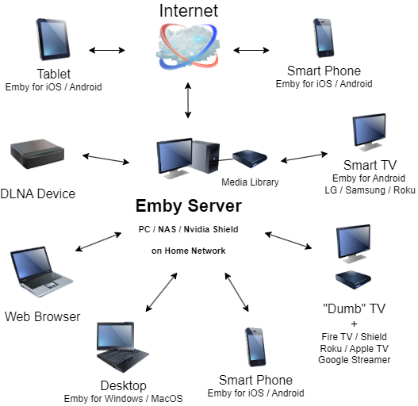

Quick Start
Emby is a personal media server. Emby allows you to organize, present and stream your personal media library from a machine on your home network to any number of devices on that network or even over the internet (with proper network configuration) when you are away from home. We support almost all common streaming devices plus web browsers and the server can run on many different platforms from Windows/Mac PCs to most popular NAS systems and even some powerful "micro" platforms such as Pi or Android boxes (Nvidia Shield).
Warning
What Emby is NOT
Emby is NOT a media streaming service. We do not provide access to movies or TV shows. We organize and present your own media library on your own home network.
Emby has two distinct parts:
- Server - Store your media library in a central place
- Client - Clients or Apps that play back media from the Emby Server
A fully-functioning Emby system requires both a Server and at least one client player. The Server includes the Emby web app which is used to manage the Server and your media library. It also features a media player, thus the minimal installation of just the server is enough to get started, but most people will want to install Emby apps on other devices for expanded client functionality.

Has someone invited you to their server?
If you have received an invitation to share an existing Emby server, then you can skip the server installation process and jump straight to app installation. The server is only required by people wanting to host their own media collection. Choose one of the many apps we have available:
Or try the online web app, using the login credentials supplied by your Emby server administrator, at
Follow these steps to set up your own Emby Server
Prepare your media
Emby identifies your media according to folder structure, file name, and type of library to which it is assigned. Once identified, Emby downloads a rich assortment of information about your media including ratings, cast, descriptions & poster art. It can often provide other content media such as movie trailers. The combination of this information creates a very rich client experience.
The requirements for organizing and naming files are quite flexible, but will require some basic structure.
The general recommendations are:
Separate media into appropriate folders (e.g., Movies in a "Movies" folder, TV shows in a "TV Shows" folder, music in a "Music" folder, photos in a "Photos" folder, etc.) This is covered in detail in later sections.
Movies should be named as "Name (Year).ext", for example "Brave (2012).mp4"
TV shows should include season and episode numbers in the name, and be stored in separate folders per show. For example: "\TV\Homeland\Season 01\Homeland s01e01.mp4"
Music should be stored within artist and album folders, such as "\Music\Artist\Album\tracks"
Install the Server
Once your media is named and organized, it's time to install the Server. The server is available on a number of platforms ranging from Windows to Linux, Mac, FreeBSD, NAS devices as well as media devices such as the Nvidia Shield TV.
For more information, see installation.
Install apps on your devices
Once your installation is up and running and you've completed the startup wizard, it's time to install apps on your devices.
Choose one of the many apps we have available:
Or try the online web app at
Add Users
You may wish to add users and invite your family and friends. Users will have their own account & password and can have their own personalized media libraries, user data, favorites, recommendations and more. You will be able to completely control access to your system at the library or feature level such as granting access to Live TV if this is setup on your system.
For more information, see users.
Install Plugins
Installing plugins can further enhance your Emby experience. Cover Art allows you to personalize the artwork that is displayed within your Emby apps, Trailers provides a library of streaming internet trailers to your media collection presented as a library. Trakt allows you to sync watched status with the Trakt web server. Emby Statics allows you to see detailed statistics about your system. There are numerous plugin you can install to customize your server and user experience via the online catalog.
For more information, see plugins.
Get Emby Premiere
Emby Premiere brings a number of additional benefits and bonus features. With Emby Premiere you can enjoy:
- Emby DVR with Live TV
- Cover Art with dynamic manipulation of artwork for a truly customized look
- Offline Media syncing to several device types such as iOS and Android Mobile
- Syncing media to local or network shared folders.
- Free Apps, get use of all Emby client apps fully unlocked for your server's use
- Cinema Mode allows you to personalize the playback experience with custom intros and trailers just like cinema
- Automatic Conversion of Media
- Integrated Backup and Restore Services
- Podcasts can be used to add your favorite podcasts to your system for all your users to access
- Smart Home features with use of Google Home as well as Amazon Alexa & Echo.
- And So Much More!